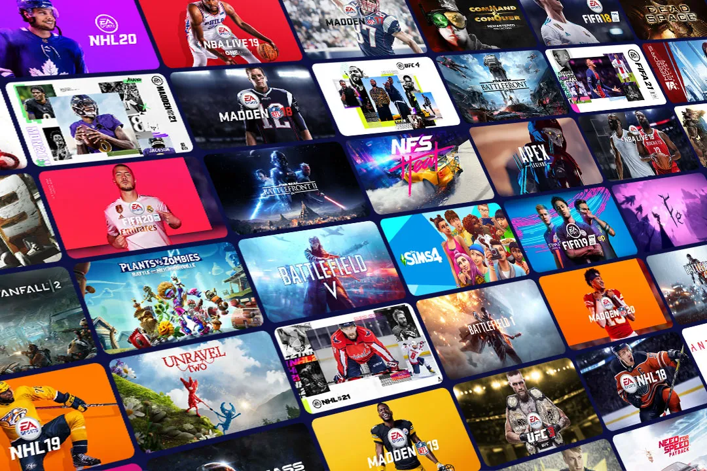
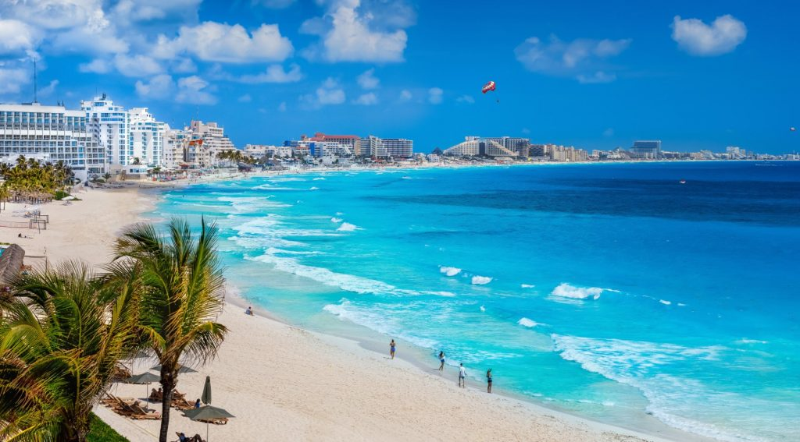

I love cinnamon buns, because they are very tasty and i love cinnamon flavoured sweets. I also enjoy the frosting on top!
Learn How to make cinnamon buns with this cinnamon bun tutorial.

I love the movie rio, I grew up watching rio and enjoyed the story! I also had favourite characters in the movie, some of my favourite characters are:
To learn more about Rio Check here.

I love playing action games aswell as adventure games. Some games I love to play are:

Mexico is my favourite place to go for vacation. I enjoy walking around the resort and go swimming in the pool. The beaches in Mexico are my favourite place to visit while in Mexico, because of the bright blue water and beautiful yellow sand. I have visited Cancun, Los Cabos, and Playa Del Carmen!
Here are the best places to visit while in mexico.
I enjoy playing soccer with my friends, making memories together and having lots of fun! Also my favourite soccer player is Cristiano Ronaldo!
Click this link to learn more about Cristiano Ronaldo.